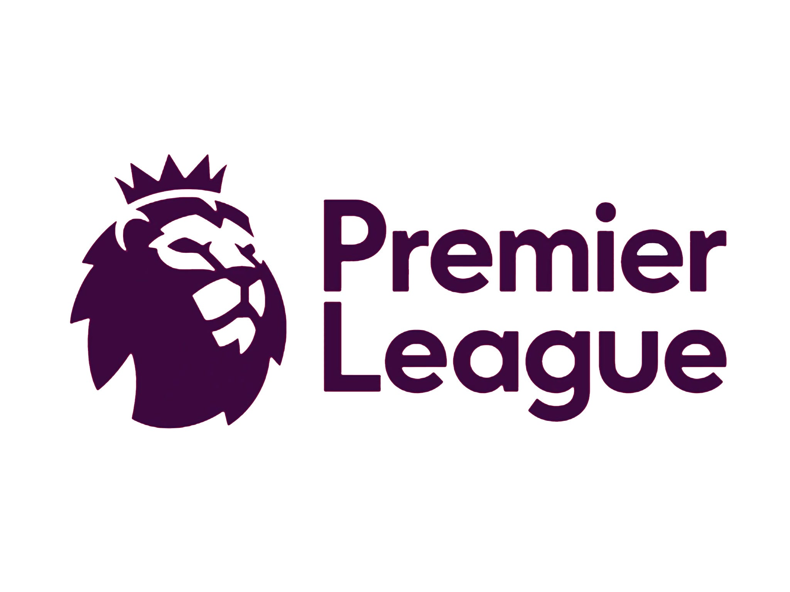

|  |
Premier League is one of the most enjotable leagues to watch. The big 4 often compete for the cup. The big 4 are Manchester City, Manchester United, Liverpool,and Chealsea.
Christiano Ronaldo plays in the Premier League along with Mohamed Salah. |
|
La Liga Is a Spanish league of football played between teams of Spain and vice versa.
Two most familiar teams you would know about are “Barcelona” and “Real Madrid”. Rivalry of these teams is indeed must watch.
This league commences in August every year and continues for a year. The team which remains at the top till the end are crowned the champions.
|
 |
Ligue 1 , also called Ligue 1 Conforama for sponsorship reasons with Conforama, is a French professional league for men's association football clubs.
PSG which is one of the best teams in the world have Messi, Neymar and Mbappe.
|
 |
The Bundesliga, sometimes referred to as the Fußball-Bundesliga, is a professional association football league in Germany.
Bayern Munich are also one of the best teams in the world and they have Kimmich, Lewondowski and Neuer.
|